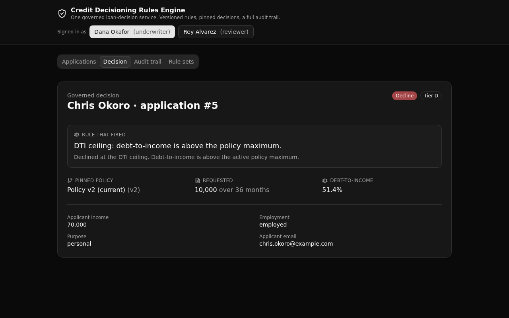

One governed loan-decision service every system calls, so credit rules live in a single versioned, auditable API layer instead of being copied into each app.

Lenders duplicate credit rules across an origination tool, a mobile app, and a partner portal, and the copies drift. This backend centralizes the rule. The credit waterfall lives in one function both the API and the seed path call, so every consumer runs identical rules.
Each policy is a row. Exactly one is active. Every decision is pinned to the version that produced it, so an old decision traces to the exact rule in force at the time.
Every event on an application lands in the log with the actor and the policy version. Rows are never updated or deleted.
An underwriter may run and override decisions. A reviewer is read-only. The role is checked in each endpoint, never with row-level security.
| Verb | Path | Enforces |
|---|---|---|
| POST | auth/login | Public. Mints a bearer token. |
| GET | applications | Signed in. Applications with applicant and decision. |
| POST | applications/submit | Underwriter only. Computes debt-to-income, opens the application. |
| POST | decisions/run | Underwriter only. Runs the waterfall, pins the decision. |
| GET | decisions/{application_id} | Signed in. The outcome, the rule that fired, the version. |
| GET | audit/{applicant_id} | Signed in. The ordered event history for an applicant. |
| GET | rule-sets | Signed in. Every policy version, active one marked. |
| GET | seed | Public. Idempotent demo reset. |
Paste this to your coding agent to stand up your own live copy, then adapt it to your domain:
Use https://github.com/xano-scratch/credit-decisioning-rules-engine as a starting template. Clone it, run `npm install`, then `npx xanots login` and `npm run xano:deploy` to deploy your own live copy. The backend is authored with @xanots/sdk in xano/ and the frontend in frontend/. Read node_modules/@xanots/sdk/llms.txt first, then adapt the tables, the evaluate_application function, and the endpoints to your own domain, keeping the versioned-policy and audit-log patterns.
Or clone and deploy directly:
git clone https://github.com/xano-scratch/credit-decisioning-rules-engine cd credit-decisioning-rules-engine npm install npx xanots login npm run xano:deploy
Demo links are ephemeral. They expire, and each redeploy publishes a new address, so a link
from an earlier run stops serving. The durable artifact is this repository. Anyone can clone
it and run npm run xano:deploy for a fresh live copy in about a minute. The two
demo accounts ship as seed data, and the app seeds its demo book on first open.